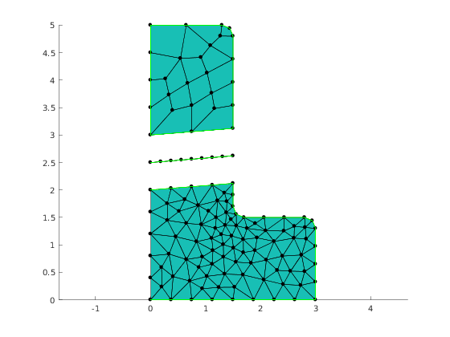

Non-conforming meshing of L-Shape geometric domain with an interface
Contents
Summary of the demo
This demo illustrates how to generate meshes separately for regions of interest. In case of L-Shape geometry, it is split into two subdomains by an straight line interface. Each subdomain can be meshed separately (together it its boundary regions). The interface line can be also meshed separately. In this demo the meshes are translated to for more clear view.
Geometric model with interface
LShapeIfaceGeom class provides geometric model with internal boundary (called interface). The user can set the plcement of the interface with some restricted way by varying parameters fA and fB in the range (0, 1).
clear variables;
Create Mesher object
When Mesher object is created it takes care of initializing interface to GMSH mesh generator
mesher = mp.Mesher();
Create object describing geometric model
geom = mp.geoms.LShapeIfaceGeom('my_domain'); geom.params.dW = 3; geom.params.dH = 4; geom.params.dt = 1.5; % % Relative placement of interface endpoints. geom.params.fA = 0.5; geom.params.fB = 0.2; % % Get the cooordinates of interface endpoints. [p1, p2] = geom.getInterfaceEndpoints(); disp(p1) disp(p2) % Specify that desired type of element fo the upper subdomain in quad. geom.params.quads=[0,1]; % Display names of geometric regions regs = geom.regions(); arrayfun(@(i) fprintf('%d %s\n',i,regs{i}), 1:length(regs));
0 2 0
1.5000 2.1200 0
1 d_subBottom
2 d_subTop
3 b_bottom
4 b_left_top
5 b_left_bottom
6 b_other_bottom
7 b_other_top
8 i_interface

Prepare regions selectors
regT = [2,4,7,8]; regB = [1,3,6,8]; regI = [8];
Generate mesh
mesh1 = mesher.generate(geom, struct('lc', 0.8, 'regionsToMesh', {regs(regT)})); disp(mesh1.regionNames()); mesh2 = mesher.generate(geom, struct('lc', 0.4, 'regionsToMesh', {regs(regB)})); disp(mesh2.regionNames()); mesh3 = mesher.generate(geom, struct('lc', 0.2, 'dim', 1', 'regionsToMesh', {regs(regI)})); disp(mesh3.regionNames()); mp.translateMesh(mesh1, [0,1,0]); mp.translateMesh(mesh3, [0,0.5,0]);
'b_left_top' 'b_other_top' 'i_interface' 'd_subTop'
'b_bottom' 'b_other_bottom' 'i_interface' 'd_subBottom'
'i_interface'
Visualize mesh
The simplest way to visualize mesh is to use Viewer class.
viewer = mp.Viewer(); viewer.show(mesh1); viewer.show(mesh2); viewer.show(mesh3);
Internal management of demo
mp_manage_demos('report', 'LShapeIfaceGeom_nonconforming', true);